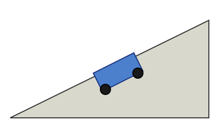

With a constant acceleration the velocity changes by the same amount in every second. This is the simplest kind of changing motion, and it is a good model for a cart rolling down a smooth ramp.
A cart starts from rest and accelerates at two metres per second squared for three seconds. Its final velocity follows from the definition of acceleration:
The answer has units of metres per second, which is a useful check on the working.

The ramp in the figure is smooth, so friction can be ignored. Here a = 2 m/s2 and t = 3 s, typed as ordinary text rather than as an equation.
Constant acceleration links velocity, time and distance with a few short equations.